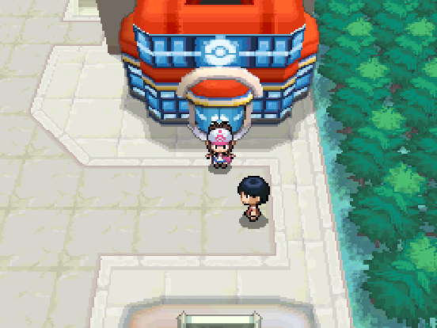
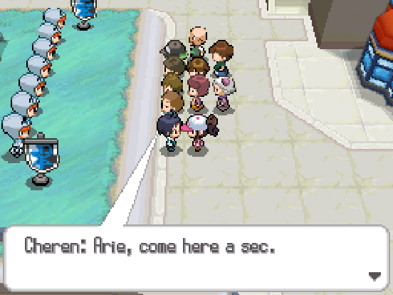
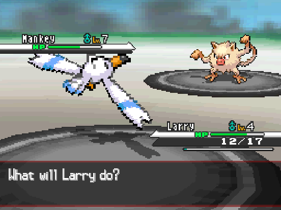
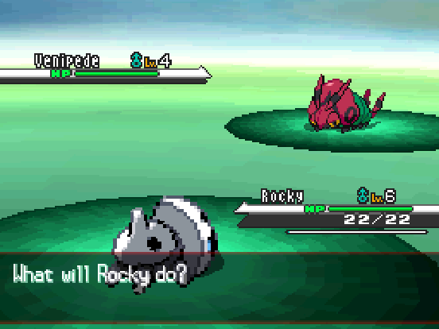
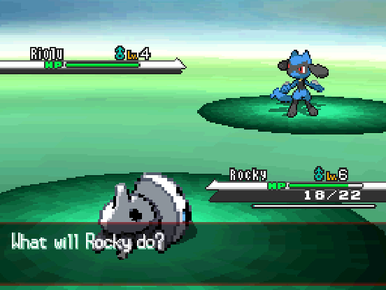
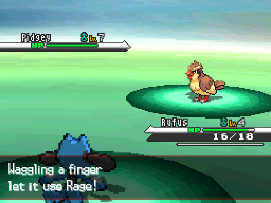
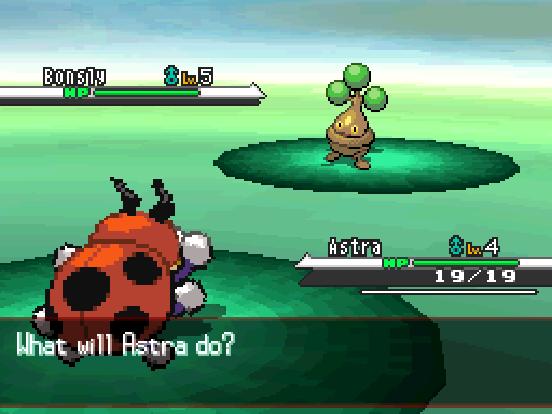
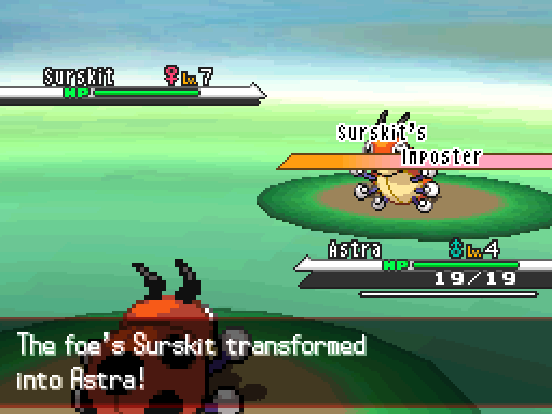
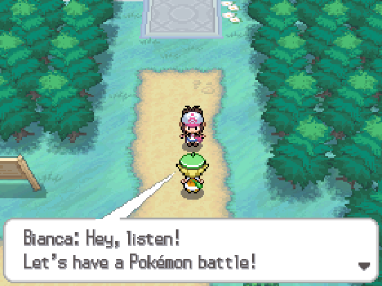

#04
2 - what do you mean its been 2 weeks
well, i MEANT for this chapter to come out a bit sooner, but i got distracted and played the entirety of pokemon infinite fusion's kanto story first. oops. anyways where were we?

oh yeah. the start.
well lets just continue our jouney to uhh hey what's going on here

...is this the pokemon equivalent of PETA? actually that sounds like a joke people would make in like 2014 so im gonna retract that statement for now. something something pokemon liberation. anywa- ok now this N guy wants to fight. i remember this guy kinda at least.

he has a decently leveled mankey, but i have the power of Type Advantages. funny side note - he wants to hear my pokemon's voice? i'm using chatter. what more do you want dude. anyways Larry sweeps and gets a cool two levels out of it.
N: As long as pokemon are confined in pokeballs, pokemon will never be perfect beings.
ok can i do, like, in pokemon... is it HG/SS that you can walk around with your pokemon? if i can't do that in this game i feel like gamefreak missed an obvious feature. either way, Cheren is heading out to striaton town, so i might as well follow. let's see what route 2's got in store for my team!

another bug! can't complain... actually i can a little but that's not the point. bug types are cool. sometimes. when they aren't terrible. is this venipede terrible? let's find out! i forgot to give it a name though :( we'll pretend it's named Vici though (as in Veni, Vidi, Vici)

Vici
Lv. 4 Venipede - Bug / Poison
Ability: Vital Spirit
Nature: Jolly
HP: 20
ATK: 7
DEF: 10
SATK: 5
SDEF: 7
SPD: 13
Moves:
- Smog
- Aqua Jet
well, it's not the worst i guess. smog is nigh useless with this spatk stat, and aqua jet doesn't have stab, but with that speed i could see Vici being useful later on. not right now though. he's sitting in the back of the party for now.
well i might as well check if there's anything else in this grass...

oh now we're talking. maybe. depends on the stat line again. but we could be talking. there's a chance. i accidently killed it and had to catch another. here we go.

Rufus
Lv. 4 Riolu - Fighting
Ability: Shield Dust
Nature: Quiet
HP: 18
ATK: 8
DEF: 11
SATK: 7
SDEF: 10
SPD: 9
Moves:
- Curse
- Metronome
- Astonish
oh my god metronome
horrible nature i should mention. maybe speed doesn't matter as much with curse on the table, but +spatk is just a waste of a nature. not very offensive oriented either. also astonish is my only consistant damage move? i think i'd rather metronome thank you. in fact i'm leading with Rufus on my next battle and using metronome instantly.

yeah ok idk what i expected. should note that since pidgey is normal type i can ONLY do damage with metronome here. didn't screenshot them all but sticky web hit, supersonic missed, and disable hit before i decided to switch him out. ah well, can't win 'em all.
on my way back from healing, i ran into my now-6th team member, though:

a rock type is nice for coverage! i guess! not something i wanted to be staring down with my very weak and frail bug type though.

Bonsai
Lv. 4 Bonsly - Rock
Ability: Water Veil
Nature: Modest
HP: 21
ATK: 9
DEF: 11
SATK: 8
SDEF: 7
SPD: 12
Moves:
- Mud Slap
- Twister
another horrible nature. not bad otherwise though. and the nature is kinda helpful with this moveset i guess. ah well, i'll take it for now. also yes i know the name is low hanging fruit i already plan on changing it later if i use him a lot. doesn't know a rock type move btw.
moving on through route 2, i ran into a trainer with a surskit. except

i kinda want a surskit now.
other happenings in route 2 include Rufus learning a fighting type move (so i don't just have to metronome and astonish anymore) and then immediately getting fissured by a barbaroach with cloud nine, and Veci learning present, which will be funny to use if nothing else. oh, and also Bianca.

half my team is dying Bianca. now is not the time. not that i have a choice.
Bianca has a solosis now! love this animal. the orb. Rocky is able to wall solosis out, since it only knows feint and block. Bianca uses a potion on solosis anyways. way to go. solosis dies, and i just remembered slakoth has sonic boom so hopefully i don't get swept. priority moves GO.
Rocky heroically dodges one, and then slakoth decides to just use spark a bunch instead of the guaranteed one shot. i love pokemon AI. Vici comes in to try and take the kill, but gets sonic boomed, then Larry gets sparked and one shot as well. uh oh. Astra gets sonic boomed too, down he falls. im so glad im not doing a nuzlocke. but now it's all up to Bonsai.
luckily Bianca is an idiot and used spark, which Bonsai survived, and Bonsai is able to get the kill. way to go Bonsai, i'll give you a promotion later.
and with that, we're at striaton city! i'm kinda liking this one city per chapter pace, i might try to keep it up depending on how often i make it to new cities. in the future there might be less interjections with pokemon stats, unless i find a replacement for a pokemon. also at each gym i should probably train up a team using pokemon that i'd otherwise leave in the box, just to spice things up a bit.
also i need to work on my workflow for this, it took roughly an hour to cross that route just because i had to take screenshots constantly and type this up as i played. i don't know if there's really a solution to that though, i think that's just the nature of documenting a playthough like this. ah well, i'm fine with it, it just feels like a lot of wasted time. anyways i might try to get one of these out per week, but college work will definitely get in the way of that so who knows. i meant to do two a week after the first chapter. hahahaha. haha. ...ha.
the team so far

Rocky
Lv. 6 Aron - Steel / Rock
Ability: Friend Guard
Nature: Docile
HP: 22
ATK: 11
DEF: 12
SATK: 10
SDEF: 13
SPD: 15
Moves:
- Struggle Bug
- Bullet Punch

Astra
Lv. 6 Ledyba - Bug /
Ability: Sand Veil
Nature: Modest
HP: 23
ATK: 9
DEF: 13
SATK: 11
SDEF: 10
SPD: 6
Moves:
- Silver Wind

Larry
Lv. 7 Wingull - Water /
Ability: Light Metal
Nature: Naive
HP: 22
ATK: 10
DEF: 13
SATK: 16
SDEF: 9
SPD: 12
Moves:
- Weather Ball
Vici
Lv. 6 Venipede - Bug / Poison
Ability: Vital Spirit
Nature: Jolly
HP: 25
ATK: 8
DEF: 13
SATK: 5
SDEF: 8
SPD: 16
Moves:
- Smog
- Aqua Jet
- Present
Rufus
Lv. 6 Riolu - Fighting
Ability: Shield Dust
Nature: Quiet
HP: 22
ATK: 9
DEF: 14
SATK: 9
SDEF: 12
SPD: 11
Moves:
- Curse
- Metronome
- Astonish
- Mach Punch
Bonsai
Lv. 6 Bonsly - Rock
Ability: Water Veil
Nature: Modest
HP: 24
ATK: 10
DEF: 12
SATK: 8
SDEF: 8
SPD: 14
Moves:
- Mud Slap
- Twister
- Thunder Shock